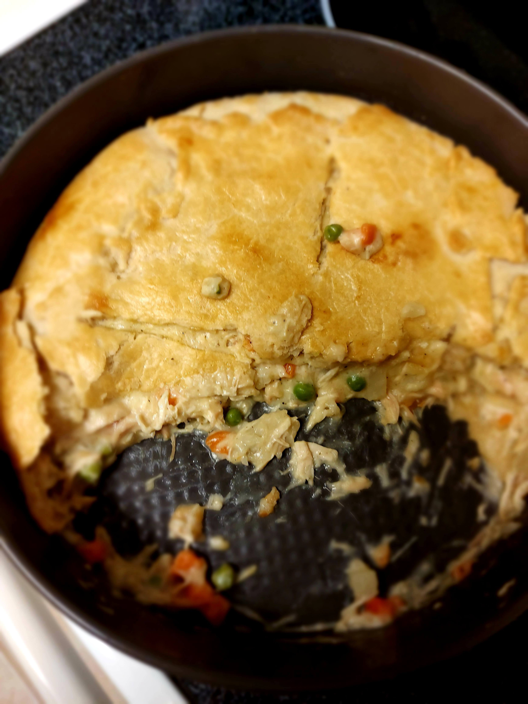

Chicken Pot Pie

Experience the Ultimate Comfort with Chicken Pot Pie!
Dive into this classic dish with a twist. The charred, exterior pairs perfectly with the creamy, rich filling of chicken, vegetables, and gravy for a delightful culinary experience.
Ingredients
- Pie Crust (store-bought or homemade)
- Boneless chicken breasts, diced
- Mixed vegetables (carrots and peas)
- Butter or oil for sautéing
- Flour
- Chicken broth
- Heavy cream or milk
- Salt and pepper to taste
- Butter or Margarine for Grilling
Steps
- In a pan, sauté the diced chicken in butter or oil until fully cooked. Remove and set aside.
- In the same pan, sauté the mixed vegetables until softened.
- Add flour to the pan and stir to make a roux. Cook for a minute or two.
- Slowly pour in the chicken broth while stirring, followed by the heavy cream or milk. Bring to a simmer.
- Add back the cooked chicken and season with salt and pepper. Stir well and let the filling cool slightly.
- Roll out the pie crust and fill half with the chicken mixture. Fold the other half over and crimp the edges.
- Butter the exterior of the pie crust.
- Heat a skillet or grill. Place the prepared pot pie on it and cook for about 3-5 minutes on each side, checking to ensure it doesn't burn. It's ready when both sides are golden brown and crispy.
- Remove from the heat, let it cool for a few minutes, then serve and enjoy!